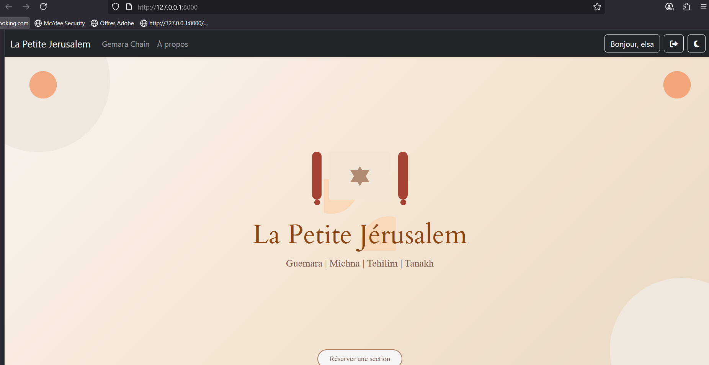
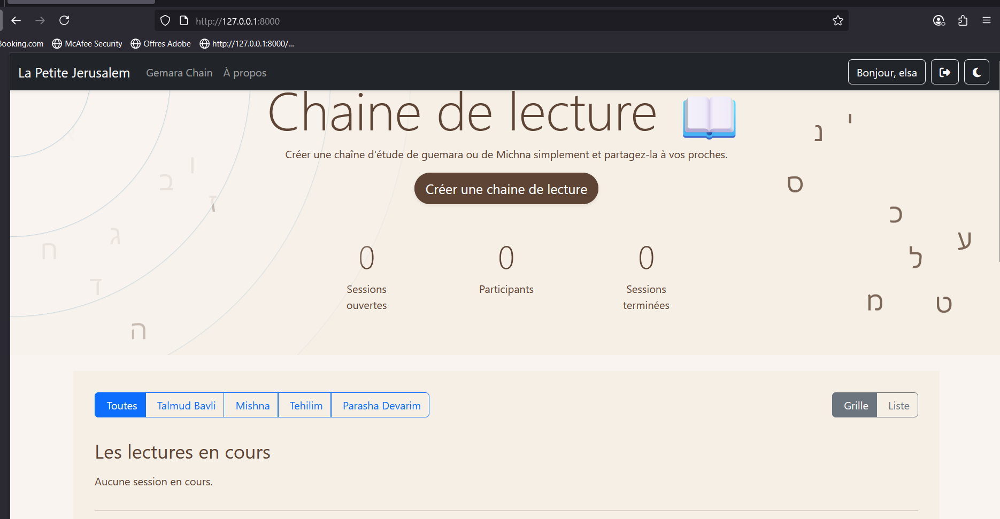

Rapport de Stage
BTS SIO 1ère année
1. Remerciements
Je tiens à remercier chaleureusement Phenixel et mon tuteur de stage, Yonathan Cardoso, pour m'avoir accueillie et accompagnée tout au long de ces six semaines. Cette expérience m'a permis de découvrir le monde professionnel du développement web et d'approfondir mes compétences techniques.
Je remercie également mon enseignant référent, Jacques BUFFETEAU, pour son suivi et ses conseils précieux, ainsi que l'ensemble de l'équipe pédagogique de mon établissement pour la qualité de la formation dispensée.
2. Présentation de l'organisme d'accueil
2.1. Identification de l'entreprise
Phenixel est une structure indépendante de développement informatique, spécialisée dans :
- La création de solutions web et mobiles
- L'intégration d'APIs (Notion, Discord)
- La mise en place de plateformes collaboratives
📌 Dénomination : Phenixel
🏢 Forme juridique : Entreprise individuelle / Auto-entrepreneur
📍 Adresse : 7 Boulevard Henri Poincaré, 95200 Sarcelles
📞 Contact : 06 01 01 68 48
✉️ Email : contact.phenixel@gmail.com
👥 Effectif : Moins de 10 collaborateurs (TPE)
📊 Taille : Très Petite Entreprise (TPE)
💼 Secteur d'activité : Développement informatique, conseil et création de solutions web
2.3. Politique RGPD
Phenixel applique les principes du RGPD dans le développement de ses applications web, notamment la sécurisation des données via Django et le respect de la confidentialité des utilisateurs.
2.4. Orientations stratégiques
Phenixel vise à diversifier sa clientèle et à renforcer son expertise technique tout en développant des partenariats pédagogiques avec des écoles.
2.5. Responsabilité Sociétale de l'Entreprise (RSE)
Phenixel intègre des valeurs de responsabilité sociale, notamment l'accueil de stagiaires, le télétravail pour réduire l'empreinte carbone et le développement de projets communautaires.
2bis. Analyse SWOT de Phenixel
Son analyse stratégique.
Forces
- Structure agile et flexible
- Expertise en développement web
- Technologies modernes (Django, APIs)
- Bon accompagnement des stagiaires
Faiblesses
- Petite structure avec peu de ressources
- Visibilité à développer
- Dépendance aux projets clients
Opportunités
- Croissance du marché des applications web
- Digitalisation des entreprises
- Partenariats possibles avec des écoles
Menaces
- Forte concurrence sur le marché
- Évolution rapide des technologies
- Difficulté à recruter des talents
3. Contexte et objectifs du stage
Il avait pour but de me familiariser avec un environnement de développement professionnel, d'approfondir mes compétences en Python et Django, et de travailler sur un projet concret intégrant bases de données, interfaces web et APIs externes.
J'ai ainsi eu l'opportunité de contribuer à une application réelle appelée La Petite Jérusalem, en développant de nouvelles fonctionnalités et en améliorant l'ergonomie générale.
Objectifs principaux :
- Découvrir un environnement professionnel agile
- Mettre en pratique mes connaissances en Python et Django
- Apprendre à travailler avec des APIs externes et des bases de données
- Développer mon autonomie et ma rigueur technique
4. Missions réalisées
Présentation de l'application
J'ai travaillé sur une application Django appelée La Petite Jérusalem, qui est une plateforme d'étude en ligne de textes juifs comme La Michna ou les Tehilims.
Au départ, l'application s'ouvrait directement sur un module interne, sans véritable page d'accueil. L'objectif était donc d'améliorer l'expérience utilisateur, tout en développant de nouvelles fonctionnalités.
Mission 1 – Création d'une landing page
Ma première mission a été de créer une landing page d'accueil, afin de structurer l'entrée dans l'application et de rendre la navigation plus claire. L'idée était d'avoir une page plus lisible, plus professionnelle, qui présente mieux la plateforme et qui guide l'utilisateur dès son arrivée.

Page d'accueil de La Petite Jérusalem

Accès au module GemaraChain depuis la landing page
Mission 2 – Développement du module Catalogue
J'ai ensuite travaillé sur le module Catalogue, principalement sur la partie backend.
Concrètement, j'ai travaillé sur :
- L'affichage d'une liste de catégories, chacune regroupant plusieurs rabbanim
- La possibilité, pour chaque rabbin, de consulter la liste de ses cours et de naviguer facilement entre catégories, enseignants et contenus
- La mise en place d'un formulaire d'ajout de cours, permettant d'indiquer un titre, de joindre un fichier audio et d'ajouter des tags
Apprentissages et réflexions
Même si je n'ai pas eu le temps de finaliser toute la partie frontend, ce stage m'a permis de comprendre en profondeur le fonctionnement de Django, notamment les modèles, les vues, les formulaires et l'architecture MVT.
Ce stage m'a permis de découvrir plus concrètement le fonctionnement d'une application web côté serveur.
Il m'a aussi appris à intervenir sur un projet existant, à respecter une logique déjà en place. C'était une expérience très formatrice.
4bis. Difficultés rencontrées et compétences acquises
Difficultés rencontrées
Au cours de ce stage, j'ai été confrontée à plusieurs défis qui m'ont permis de progresser :
- Première expérience avec Django : Découverte du framework et compréhension de l'architecture MVT (Modèle-Vue-Template)
- Intégration visuelle : Assurer une cohérence graphique tout en créant une identité propre à la landing page
- Responsive design : Adapter les interfaces pour mobile, tablette et ordinateur
- Gestion des fichiers médias : Configuration de l'upload et du stockage sécurisé des fichiers audio
- Système de filtrage : Mise en place de filtres dynamiques pour rechercher les cours
- Versionning Git : Apprentissage de la gestion des branches, des merges et résolution de conflits
- Débogage : Identification et correction d'erreurs dans les vues Django et les templates
Compétences acquises
Ce stage m'a permis de développer de nombreuses compétences en développement web :
💻 Compétences techniques
- Maîtrise du framework Django (templates, vues, formulaires)
- Création d'interfaces web avec HTML/CSS responsive
- Gestion de formulaires et validation des données côté serveur
- Utilisation de Git pour le travail collaboratif (branches, merges)
- Développement full-stack : backend (Python/Django) et frontend (HTML/CSS/JS)
- Gestion des fichiers médias et des uploads
🎯 Compétences professionnelles
- Travail en autonomie sur des fonctionnalités complètes
- Compréhension des besoins utilisateur et design UX
- Résolution de problèmes techniques et débogage méthodique
- Compréhension des bonnes pratiques de développement web
- Communication et collaboration avec le tuteur de stage
- Organisation et gestion de projet
5. Conclusion
Ce stage chez Phenixel m'a permis de découvrir concrètement le développement web avec Django et de participer à un projet réel de A à Z, une expérience fondamentale pour ma formation en BTS SIO qui a renforcé mes compétences techniques et ma compréhension du travail en équipe sur des projets concrets.